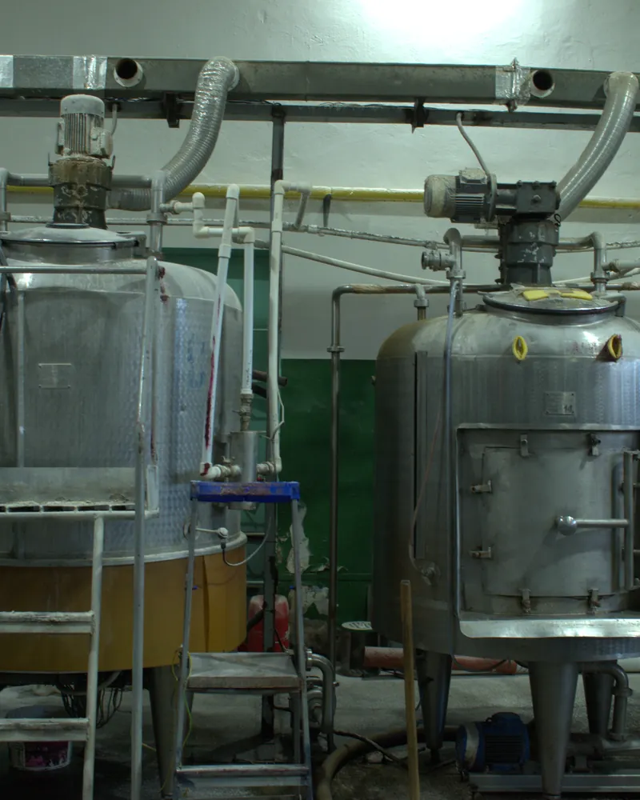

О нас
«Хартия» — небольшая ремесленная пивоварня. Первое пиво мы сварили для себя, а потом уже начали делиться продуктом с жителями Тюмени.
Основная концепция пивоварни — свежесть и качество продукта. Мы хотим, чтобы тюменцы пили напиток, сваренный на их родной земле, и были уверены: пивовар их не подведёт, а то, что сегодня в кружке, ещё утром было на пивоварне.
Мы варим пиво, которому хочется уделить время: неспешно разлить его по бокалам, насладиться вкусом или разделить этот момент с самыми близкими.
В нашей линейке — четыре сорта настоящего нефильтрованного, непастеризованного пива. У каждого свой вкус, настроение и характер, а вместе они складываются в историю «Хартии»: историю о том, как любимое дело становится частью жизни.
Уже более десяти лет мы делимся своим пивом с вами. Откройте для себя «Хартию» — возможно, один из наших сортов станет именно тем, к которому захочется возвращаться.
Во что мы верим
Четыре вещи, которыми мы не поступимся.
Честный состав
Вода, солод, хмель и дрожжи. Без вкусовых добавок.
Свежесть
То, что сегодня в кружке, ещё утром было на пивоварне. Пиво должно дойти до вас, пока оно живое.
Живое пиво
Настоящее нефильтрованное, непастеризованное. Мы не торопим процесс.
Любимое дело
История о том, как любимое дело становится частью жизни.